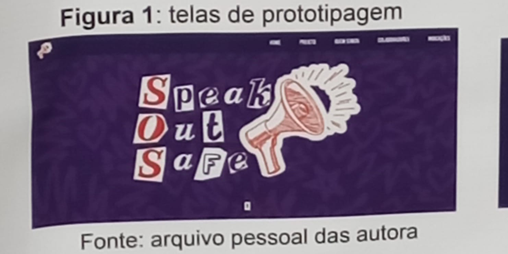
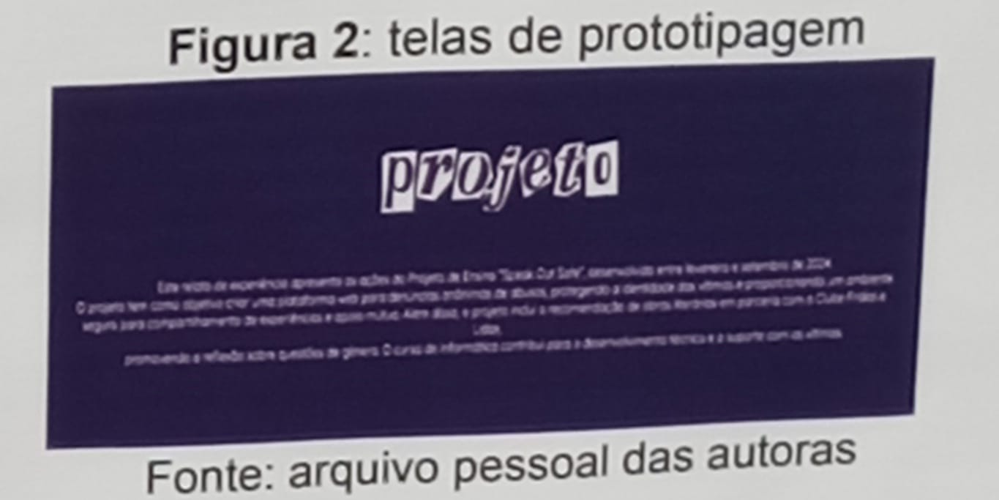
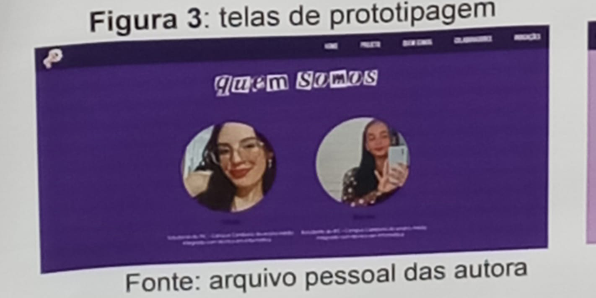
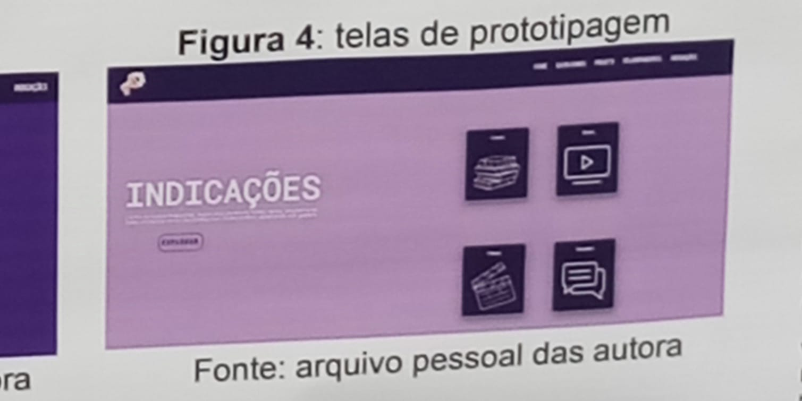

INTRODUÇÃO
O aumento alarmante dos casos de abuso e bullying, especialmente entre crianças adolescentes, revela a necessidade urgente de mecanismos de denúncia seguros e anônimos. Considerando que muitas vítimas não denunciam por medo de serem identificadas, este projeto propõe a criação de uma plataforma digital que facilita o processo de denúncia e oferece suporte efetivo às vítimas. A plataforma visa aumentar o número de denúncias e garantir a proteção das vítimas, em conformidade com a legislação brasileira que reforça a importância de tais iniciativas.
PROCEDIMENTOS METODOLOGICOS
Para a criação da plataforma web de denúncia anônima de abusos, foram utilizadas ferramentas específicas de design e programação. O Canva foi escolhido para o design, permitindo uma colaboração eficaz entre os desenvolvedores e garantindo a coesão visual e funcional do site. No desenvolvimento do código, foi utilizado o Visual Studio Code, um editor de código aberto versátil, que facilitou a escrita e edição do código. A extensão Live Server, integrada ao editor, permitiu testar as funcionalidades em tempo real, otimizando o processo de desenvolvimento.
   RESULTADOS E DISCUSSÃO
O projeto avançou conforme o planejado, com diversas etapas já concluídas. A fase inicial incluiu a pesquisa de plataformas semelhantes, resultando na definição das funcionalidades e estrutura de navegação do site. Em seguida, foram coletados dados através de uma pesquisa com o clube de leitura, identificando as principais dificuldades enfrentadas pelas vítimas ao denunciar abusos online. Esses insights guiaram o design e desenvolvimento, garantindo que o site atenda às necessidades do público-alvo. O impacto no aprendizado técnico dos alunos e na conscientização sobre justiça social foi significativo, reforçando o potencial do projeto para alcançar seus objetivos e promover um impacto social positivo.
CONSIDERAÇÕES FINAIS
Conclui-se que o projeto tem alcançado seu principal objetivo de criar uma plataforma web dedicada ao apoio e à denúncia anônima de casos de abuso. O site desenvolvido permite que vítimas façam denúncias de forma segura e discreta, sem a necessidade de se expor, o que é fundamental para garantir a proteção e o suporte emocional necessário. A conclusão do desenvolvimento da plataforma representa um avanço significativo na criação de um ambiente seguro e acolhedor para vítimas de abuso, e espera-se que continue a desempenhar um papel crucial na promoção da justiça e no apoio às pessoas afetadas. A próxima etapa envolverá a implementação final e a divulgação da plataforma, visando alcançar o maior número possivel de usuários e maximizar seu impacto positivo.
BRASIL Lei n 13718 de 24 de setembro de 2018 Abera o Decreto-Lei n° 2848, de 7 de decembro de 1940-Codigo Pena para prever o crimes de importunado sexual duado de cena de estupra de euro de verve de cana de sex pompala e de outras provocas Dano Oficial da República Federativa do Brasil Brasil, OF, 25 set 2018 WILKER L Brasil registra mais de 11 mil denuncias de violação sexual contra crianças e adolescente 2024 Disponivel hpswww.brasato.com 2020 08/14 bras regata mais de 11-a denuncias de concea ente em 200 Acesso em 20 ago 2 JUSTICEIRAS Forpa tarela pré-her-Seja uma voluntaria Disponivel em pswww.justices.org.br Acesso a 29 ap AWM